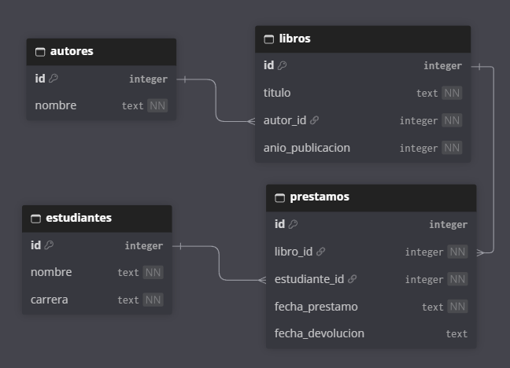

¿Por qué necesitamos JOIN?
Una base de datos separa la información en tablas para evitar repetir datos. Cuando una pregunta necesita datos de varias tablas, usamos JOIN para relacionarlas mediante columnas que tienen valores en común.
En esta lección trabajarás con cuatro tablas: autores, libros, estudiantes y préstamos.
Esquema de la biblioteca

libros.autor_id, prestamos.libro_id y prestamos.estudiante_id son claves foráneas que apuntan a otra tabla.
1. INNER JOIN: solo coincidencias
Un INNER JOIN devuelve las filas que tienen una coincidencia en ambas tablas. Puedes omitir la palabra INNER y escribir solamente JOIN.
Los alias hacen la consulta más corta y fácil de leer:
2. LEFT JOIN: conserva todas las filas de la izquierda
LEFT JOIN conserva todas las filas de la tabla escrita después de FROM, aunque no tengan coincidencia. Cuando falta un dato relacionado, SQLite muestra NULL.
También puedes unir tres tablas para saber quién tiene cada libro:
3. CROSS JOIN: todas las combinaciones
CROSS JOIN combina cada fila de una tabla con cada fila de la otra. No necesita una condición ON; por eso el resultado crece rápidamente. Úsalo solo cuando realmente necesitas todas las combinaciones.